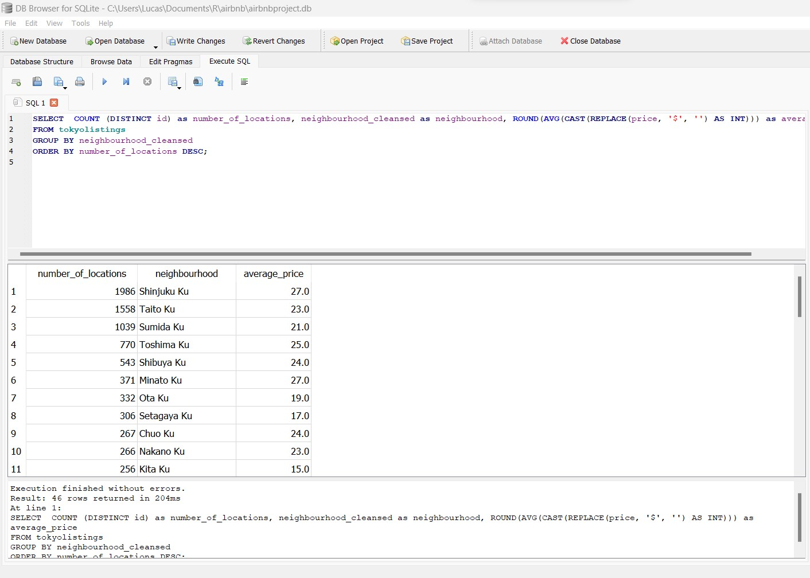
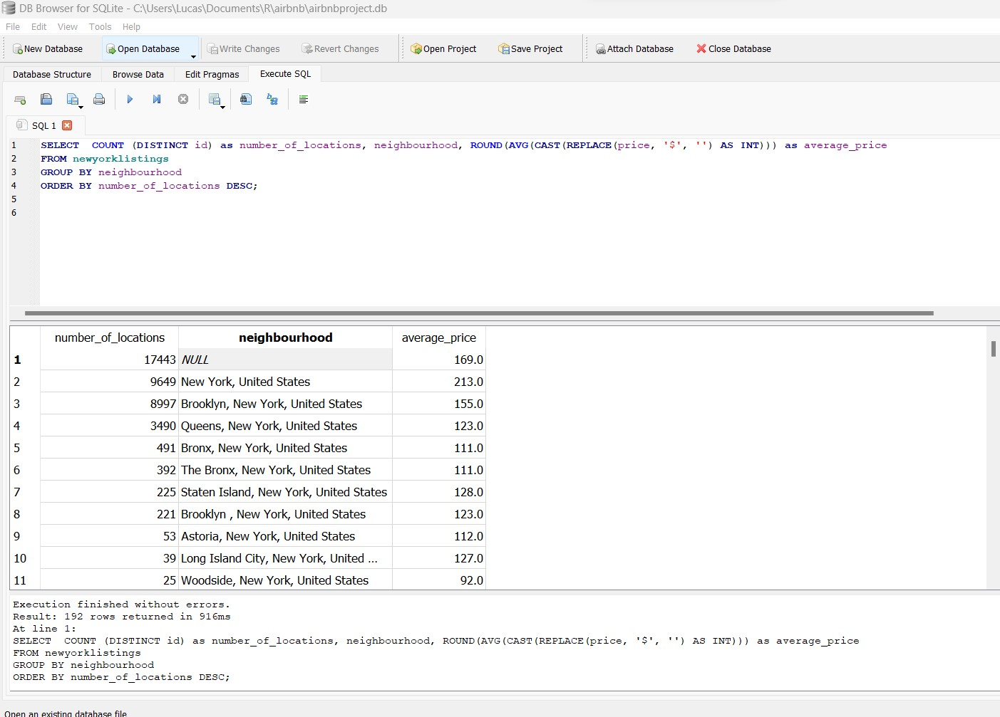
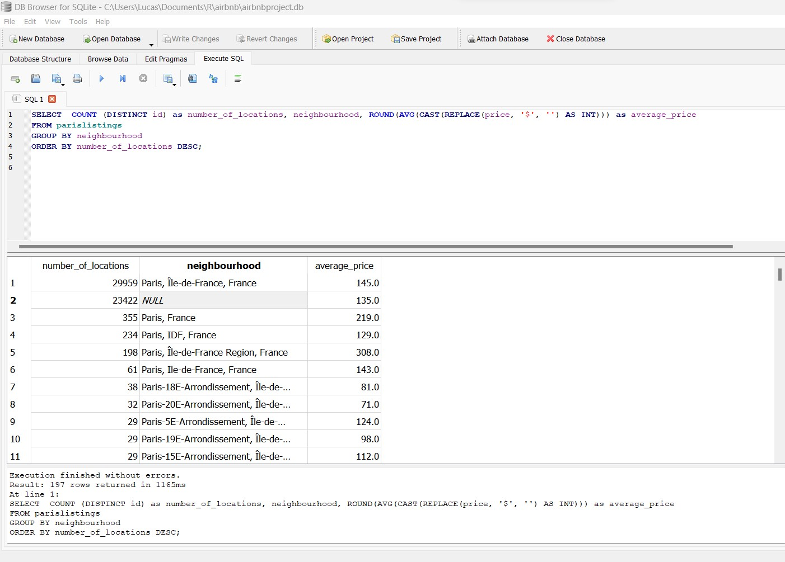
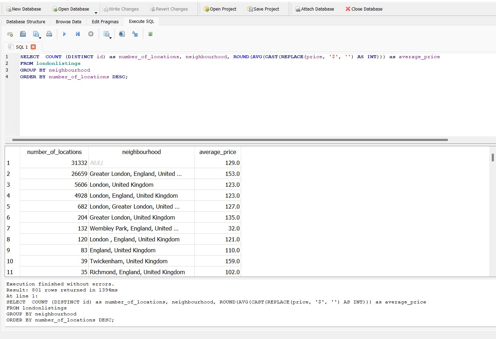
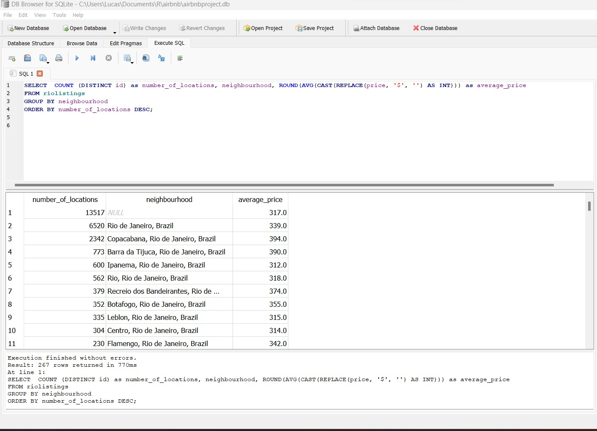

1 Airbnb Brief Comparative Analysis
1 - Introduction
Airbnb, Inc. is an American San Francisco-based company operating an online marketplace for short-term homestays and experiences. The company acts as a broker and charges a commission from each booking. The company was founded in 2008 by Brian Chesky, Nathan Blecharczyk, and Joe Gebbia. Airbnb is a shortened version of its original name, AirBedandBreakfast.com. The company has been the subject of criticism for lack of regulations and enabling increases in home rents. Nowadays, is a popular website amongst travelers all around the world and many times can be used as a substitute for traditional hotels. Since it’s an user-to-user website, it’s the users themselves who get in contact with each other and set up details about their stay. The website also provides an user review system - both for the contractors and lessees. The website provides some official data that can be obtained in “http://insideairbnb.com/get-the-data/” and the data used in this analysis is taken from December 29th, 2022. All of the files used in this analysis are provided in my github.
I used the website before and then became curious as to the number of available places for rent in famous cities across the world. For this analysis, I used the data from the following cities: Tokyo (Japan), London (United Kingdom), Paris (France), Rio de Janeiro (Brazil) and Shanghai (China). The data can be obtained in the approachable CSV format, so I decided to use SQL to better glance at the data and to filter it effectively. The SQL tool I used for this is “DB Browser for SQLite”.
2 - Getting into the data
At first I was curious about only the city of Tokyo, which is where I live. From my own personal life experience, I noticed not so many people opt to choose an Airbnb location when they come to Tokyo, prefering staying in hotels. So my first question was:
“How many available locations are there in Tokyo?”
This can be accessed by the simple query:
SELECT COUNT (DISTINCT id) FROM tokyolistings
The result seemed surprisingly small, given the sheer size of Tokyo. We will come back to this result later. I then proceeded to the question
“What are the most concentrated neighbourhoods in Tokyo?, i.e. the ones which have the most amount of airbnb locations?”
For this, I used the Following query
SELECT COUNT (DISTINCT id) as Number , neighbourhood_cleansed
FROM tokyolistings
GROUP BY neighbourhood_cleansed
ORDER BY Number DESC;
The result was somewhat expected, with the district of Shinjuku being the most popular, followed by Taito. Shinjuku is the most populated region of Tokyo and it is a central hub for transportation within the metropolis, also having a Bullet Train station.
Now comes a very important question for those who are interested in traveling:
“What is the price average for each Neighbourhood?”
Given some variables, such as size, type of location - entire apartment, single room, etc -, and other amenities, the price can vary wildly between the same neighbourhood. However, by determining the average, we can find overall good neighbourhoods to look into. We can filter those by both price and location at the same time.
SELECT COUNT (DISTINCT id) as number_of_locations,
neighbourhood_cleansed as neighbourhood, ROUND(AVG(CAST(REPLACE(price,
‘$’, ’’) AS INT))) as average_price FROM tokyolistings
GROUP BY neighbourhood
ORDER BY number_of_locations DESC;

Because the result was being skewed because of the “$” symbol and for the fact that the “price” column was a string, we need a way to convert it to a numeric value so that the analysis can go on without errors. We will also round the values With this query, we will even show which neighbourhood is the most expensive in descending order. For us to show starting from the cheapest to most expensive, we can simply replace the last line with
ORDER BY number_of_locations ASC;
This gave us an interesting result, however we need to consider some factors in this step. First, we are not so sure about the currency in which the data is provided. “$” stands for the dollar symbol and the average price per region seems somewhat reasonable in dollars, however checking the data can show us some odd values, to say the least.
Here, some values seem to defy common sense. While it’s true that websites such as ebay or airbnb, where is the owner who regulates the price of the product, many people seem to input values beyond the common sense. The opposite of too expensive can also be seen in the image bellow, where some values are simply “zero”.
Part of a job of an analyst is to evaluate the quality and integrity of the data, and try to work around or understand when such oddities happen. Some things might be simply input errors from the analyst, but many times it could be just inconsistent data from the source, so we need to be careful about that.
Also, while the maximum and minimum values seem absurd, the “average” values also seem a bit odd if they are to be taken in dollars. Organizing the data by ascending price can show us checking the table that there are too many high values in dollars, which seems a bit too overpriced, even though Tokyo has the fame of being an expensive city. We can also assume that the values are in the japanese Yen, where numbers tend to go higher than in dollars or euros. For example, the average price of 130 yen more or less equals to 1 dollar. The highest bill in Japan is that of 10.000 Yen, which is roughly valued at around 75US$ at the date of this analysis.
Looking at all of this, we can go to the next step in our analysis.
3 - Comparisons
Since the number of results in Tokyo seemed relatively small for such a massive city. According to various sources, including https://worldpopulationreview.com/world-city-rankings/largest-metro-areas-in-the-world Tokyo has the most populated metropolitan region in the world. Less than 10 thousand airbnb locations just sounds so little. Then I’ve decided to investigate into other famous and populated metropolitan areas to establish comparisons. I’ve decided to analyze the following cities across the world: New York, Paris, London, Rio de Janeiro and Shanghai. For each city, for the sake of simplicity and speed, we can just glimpse over the data quickly using just two queries: quantity of total available places and then the division by price in each neighbourhood. Let’s start with New York.
For a quick reminder, this would be the query for this case
SELECT COUNT (DISTINCT id) as number_of_locations FROM newyorklistings
The total result was more than four times that of Tokyo, which is impressive. Now let’s see the price divided by neighbourhood.

Here, we can see the appearance of a NULL value within the neighbourhoods. This might be by some factors, but it most likely could be by the users not quite knowing in which neighbourhood their place was located or having no applicable value. Since the number of NULL values for neighbourhood is too high, it would not be a good idea to remove it from the analysis. A glance at the “price” column can show us that the values seem a bit more reasonable than Tokyo if in dollars, however one must wonder why these values are in a string format and not in numeric in the first place.
Now, for the sake of brevity, let’s do all the operations in the
remaining cities.
Paris

London

Rio de Janeiro

And finally, Shanghai, which was a surprise
A whooping zero. I did a better investigation on the data to see if I had made some sort of mistake when importing the files.
Then I’ve decided to take a look on the file itself. Since it is a CSV file, you can open it with a text editor.
The final results had some interesting points, that could have a list of their own:
1 - The Shanghai data was empty, even looking at the txt document showed us there is no data there. Even another data provided in the website had the same result. Unfortunately, we are prone to faulty data in this line of work.
2 - It was surprising to see that London had the most listings of all of the locations, even more than Paris. While London is also a great tourist attraction, you would imagine Paris would the the number 1 in popularity. This could be an interesting case on studying data bias and how some assumptions can be disproven with data.
3 - Rio de Janeiro has a huge amount of available places, but the sheer amount available in Copacabana - while also having a huge average price - was surprising. It is a region known to be one of the most expensive in the city, while also attracting many and many tourists. It would be interesting to look it up further on the topic, but we can do so another time.
Now we can come again to our initial question on this portion: if Tokyo is so massive, why does it have so few locations available? This is where the analyst job needs to be more investigative. Cold data can lead to many interesting points, but context is very important in any analysis. We could assume at first glance that maybe the culture of Airbnb doesn’t particularly suits the japanese public, or the traditional hotel industry has too much of a hold on the city. However, a simple search can show us a more detailed result as to why, explained well across the internet in traveling blogs and news outlets. It basically sums down to a change in regulation in 2018 regarding Airbnb and lodgings in Japan requiring a license. Many have dropped from the site because of this new regulation, making it unviable. Like this, we can see how huge of an impact local legislation and other practices can have on global businesses, even on established brands and services.
4 - Conclusion
Airbnb is not so popular in Japan compared to other locations around the world, but it seems a traveling person shouldn’t have much problem while looking for a place in Tokyo. As it would be the case with many person-to-person offering, it would be a good idea do investigate a potential logging well before deciding, as some places seem to have weird prices or other untrustworthy conditions.